Method overview and representative 3D morphing results.
Photorealistic Gaussians fracture during deformation. Rigid meshes demand clean inputs. SemMorph3D bridges both worlds.
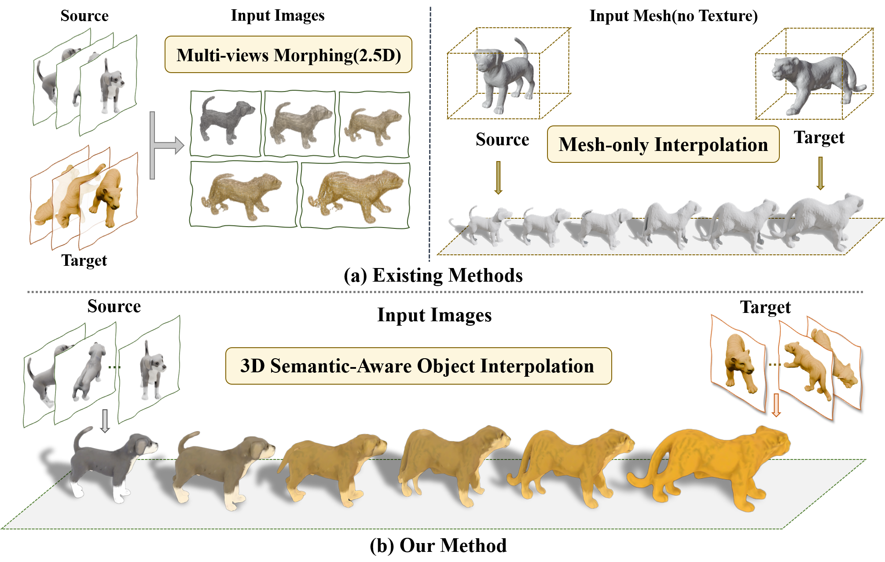
We introduce SemMorph3D, a novel framework for semantic-aware 3D shape and texture morphing directly from multi-view images. While 3D Gaussian Splatting (3DGS) enables photorealistic rendering, its unstructured nature often leads to catastrophic geometric fragmentation during morphing. Conversely, traditional mesh-based morphing enforces structural integrity but mandates pristine input topology and struggles with complex appearances. Our method resolves this dichotomy by employing a mesh-guided strategy where a coarse, extracted base mesh acts as a flexible geometric anchor, providing the topological scaffolding to guide unstructured Gaussians. We further propose a dual-domain optimization that establishes unsupervised semantic correspondence, synergizing geodesic regularization for shape preservation with texture-aware constraints for coherent color evolution. On the proposed TexMorph benchmark, SemMorph3D substantially outperforms prior 2D and 3D methods, reducing color consistency error (ΔE) by 22.2% and EI by 26.2%.
A coarse extracted mesh acts as a deformable anchor, compensating for topological artifacts in 3DGS.
Geodesic shape regularization meets texture-aware color flow — jointly solved in a hybrid representation.
No labels, no category templates, no specialized 3D assets. Correspondence emerges from the data.
From multi-view images to textured 3D morphs through a unified mesh + Gaussian representation.
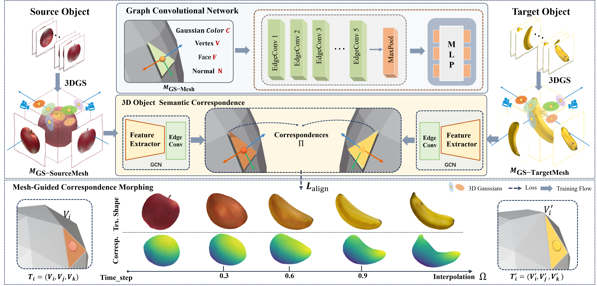
SemMorph3D performs high-quality 3D morphing between a source X and a target Y given only their multi-view image observations. We first extract surface meshes from 3D Gaussian Splatting to align geometry and texture. Using the learned correspondence matrix ΠXY, intermediate shapes are interpolated and refined through a joint shape-and-texture loss — producing morphs that are geometrically stable, chromatically faithful, and topologically consistent.
Morphs across synthetic assets, 3D scans, and in-the-wild mobile phone captures.
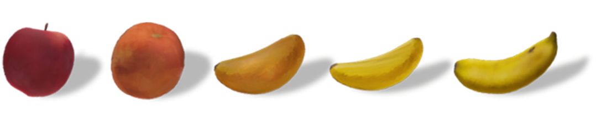
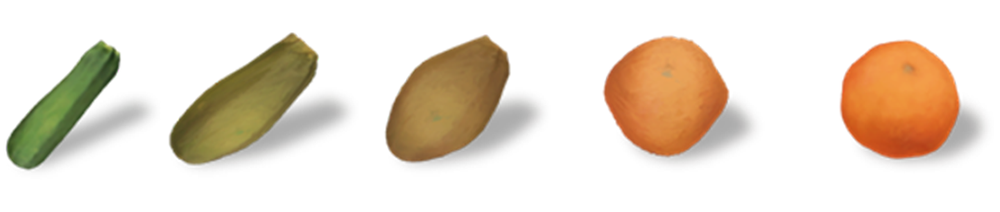
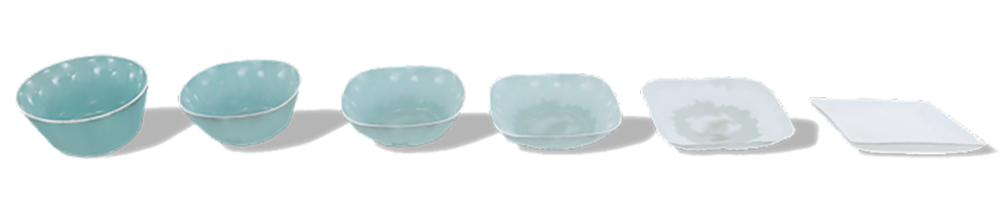
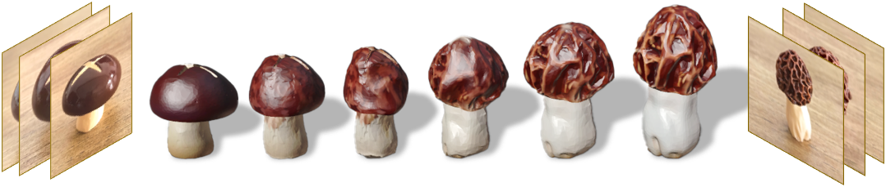
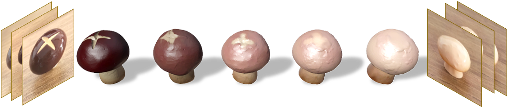
Against six state-of-the-art 2D and 3D morphing baselines on the TexMorph benchmark.
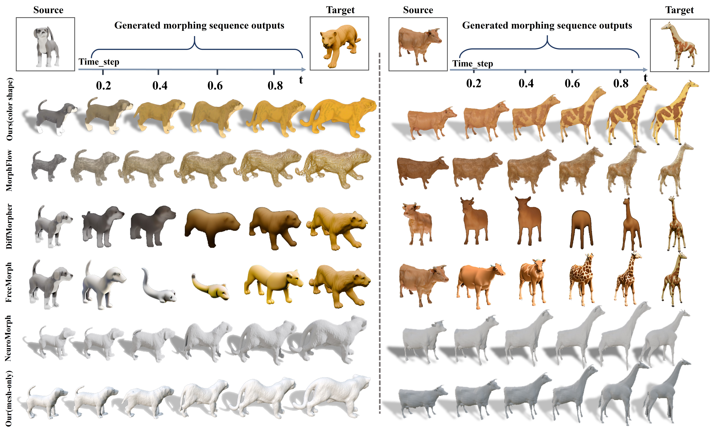
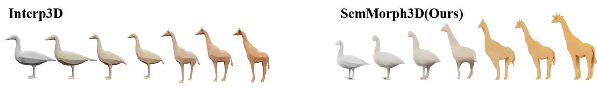
We compare against six methods: (1) DiffMorpher and (2) FreeMorph for image morphing; (3) NeuroMorph for untextured 3D shape morphing; (4) MorphFlow for textured multi-view output without true geometry; (5) Interp3D for 3D shape morphing without explicit point-wise correspondence; and (6) Ours, which produces textured 3D morphs with geometric detail directly from image inputs. Our approach uniquely preserves both geometric integrity and appearance coherence across the entire morph trajectory.
A texture-rich, morphing-focused evaluation suite spanning synthetic, scanned, and in-the-wild 3D objects.
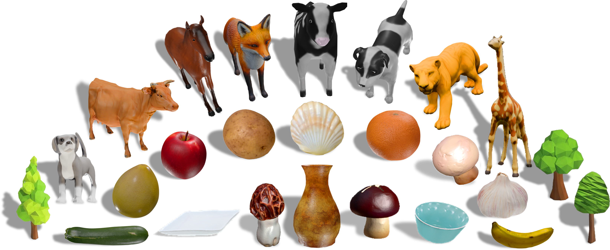
To rigorously evaluate 3D morphing from multi-view images, we propose TexMorph (Texture-rich, Morphing-focused). The benchmark comprises challenging source–target pairs designed to stress both geometric and appearance transformations, including: (1) high-fidelity synthetic models with complex textures rendered from multiple viewpoints; (2) real-world objects captured via 3D scanning; and (3) objects captured in-the-wild using standard mobile phone cameras. The dataset features over ten object categories — animals, fruits, furniture and more — offering diverse topological and textural challenges.
Human preference consistently favors our morphs across color consistency, structure, and edge continuity.
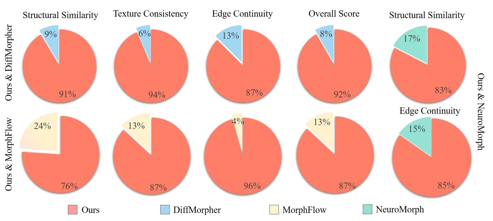
We conducted a user study comparing SemMorph3D against the baselines along three perceptual axes: color consistency, structural similarity, and edge continuity. Across all three, participants overwhelmingly preferred our results, confirming that the gains reported by our quantitative metrics translate to tangible perceptual quality.
Citation will be available upon publication.